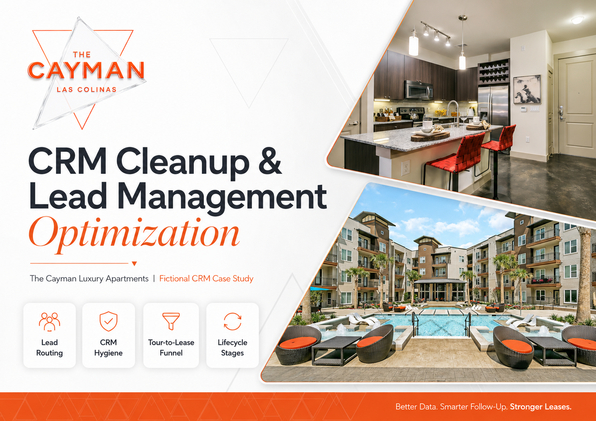
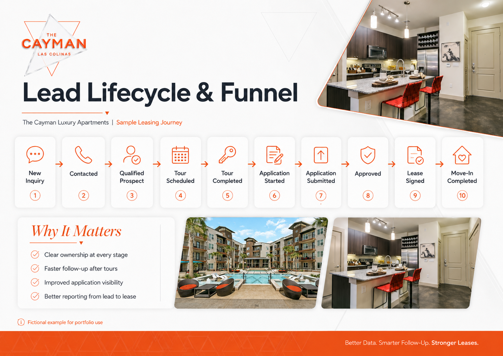
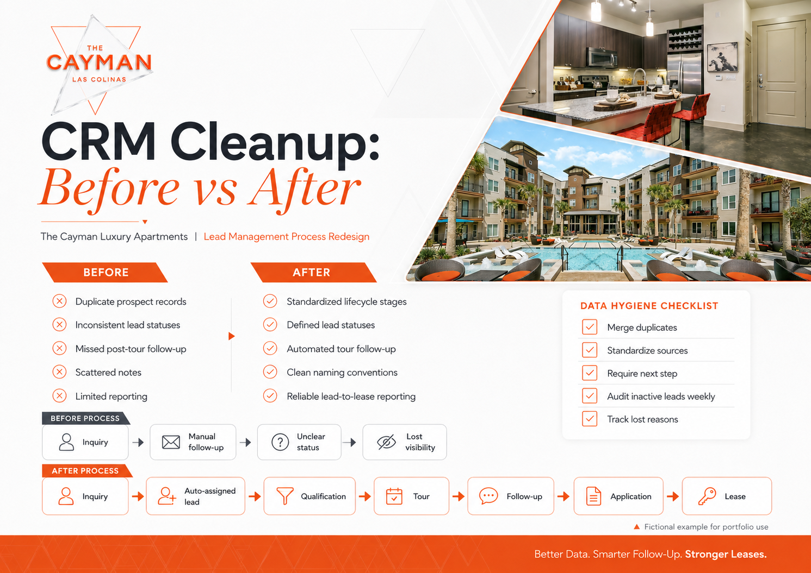
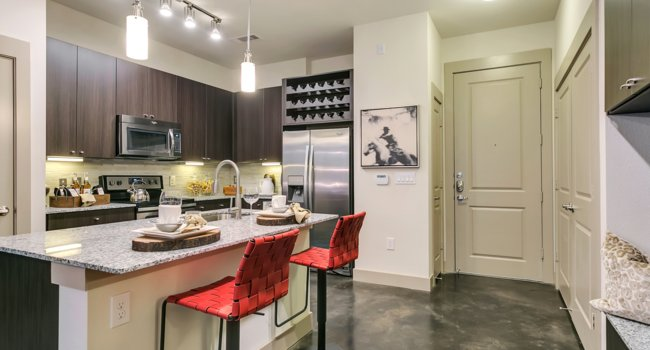
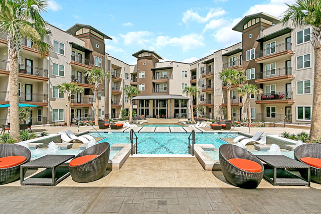

CASE STUDY / 08 · INDEPENDENT PORTFOLIO PROJECT
CRM Cleanup &
Lead Management Optimization
An independent CRM operations case study designed to improve lead organization, leasing follow-up, and tour-to-lease visibility.

Luxury leasing
with cleaner CRM flow.
The Cayman received prospective renter inquiries through property websites, listing platforms, phone calls, walk-ins, and referrals. This case study highlights CRM cleanup and lead-management work focused on organizing prospect data, improving follow-up consistency, and creating clearer visibility from initial inquiry through move-in.
- Project Type
- Independent portfolio case study
- My Role
- CRM and Lead Management Strategist
- Industry
- Luxury Multifamily Housing
- Tools and Skills
- CRM architecture, lifecycle stages, lead scoring, data hygiene, workflow design, segmentation, and reporting strategy
Prospect data can get messy
fast.
Designing a clear
lead lifecycle.

The proposed lifecycle creates a shared definition for each stage of the leasing journey: New Inquiry → Contacted → Qualified Prospect → Tour Scheduled → Tour Completed → Application Started → Application Submitted → Approved → Lease Signed → Move-In Completed.
This helps the leasing team understand where each prospect is, who owns the next action, and where prospects are dropping out.
From disorganized records
to a repeatable process.

Before
- Duplicate records
- Inconsistent statuses
- Manual follow-up
- Missing next-step dates
- Unstructured notes
- Limited reporting
After
- Standardized lifecycle stages
- Defined lead-status rules
- Duplicate-management standards
- Required next actions
- Automated follow-up triggers
- Reliable lead-to-lease reporting
Clear names for
clear next steps.
New
Inquiry received, but no outreach has been completed.
Attempted Contact
A call, email, or text has been sent, but the prospect has not responded.
Engaged
The prospect has responded and is actively communicating.
Qualified
The prospect’s budget, move-in date, location needs, and apartment preferences align with available options.
Tour Scheduled
A virtual or in-person tour has been booked.
Tour Completed
The prospect attended the scheduled tour.
Application Ready
The prospect has requested application instructions or indicated intent to apply.
Nurture
The prospect is interested but is not ready to move within the active leasing window.
Lost
The prospect selected another property, became unresponsive, or no longer meets qualification requirements.
A simple model for
prioritizing outreach.
| Signal | Score |
|---|---|
| Responded to outreach | +5 |
| Requested current availability | +10 |
| Move-in date within 30 days | +15 |
| Scheduled a tour | +15 |
| Completed a tour | +20 |
| Requested an application | +25 |
| No response after three attempts | -10 |
| Move-in date more than 90 days away | -5 |


Rules for cleaner
prospect records.
Every stage needs
an owner.
Every stage should include a clear owner, a required next step, a due date, a standardized status, and a documented interaction history.
Cleaner records start
with clean labels.
Apartments.com | Organic2026_Q3_MoveInSpecialTour Completed | 07/09/26 | 1BRFollow-Up | Post-Tour | 24 HoursLost | Selected CompetitorWeekly upkeep for
better visibility.
- Merge duplicate contacts
- Standardize phone-number formatting
- Validate email addresses
- Standardize lead sources
- Require a next-step date
- Close inactive leads after the defined period
- Review open prospects weekly
- Audit lost reasons monthly
- Remove outdated or incomplete records
- Review CRM permissions and record ownership
Measure the journey
without claiming results.
This project demonstrates how CRM structure can support both customer experience and leasing performance. By defining lifecycle stages, cleaning prospect data, assigning clear ownership, and creating repeatable follow-up processes, a leasing team can spend less time searching through records and more time moving qualified prospects toward a signed lease.
This portfolio case study is based on my previous experience in luxury apartment leasing. Selected examples have been organized and presented for portfolio clarity.